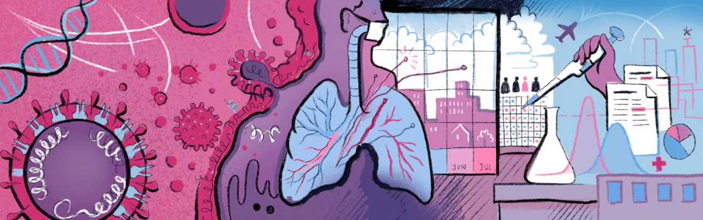

Benjamin Bach, PhD, HDR
Research Scientist
Inria, France
Bivwac team
200 Av. de la vieille Tour
33400 Talence, France
benjamin.bach@inria.fr
Google Scholar
LinkedIn
OrcID: 0000-0002-9201-7744
Full CV
Research & Bio
Publications
Teaching
Text Analysis for Clinical Guidelines
In this project we are applying a combination of natural language processing and data visualisation to UK hospital guidelines for treating COVID-19 patients.
People involved
- James Scott-Brown
- Benjamin Bach
- Kenneth Baillie